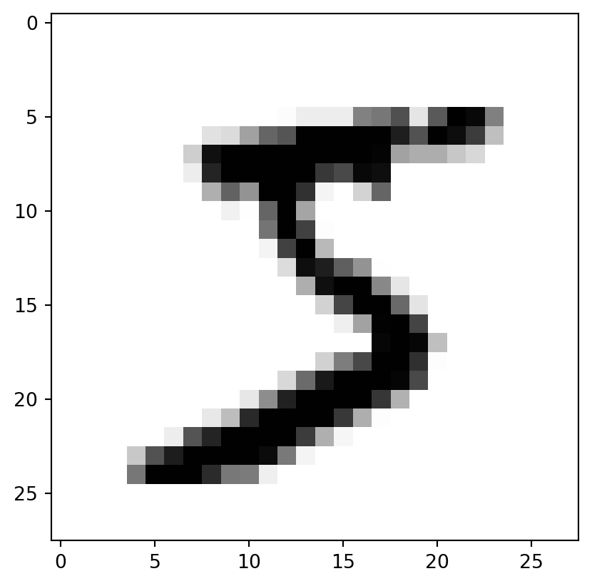
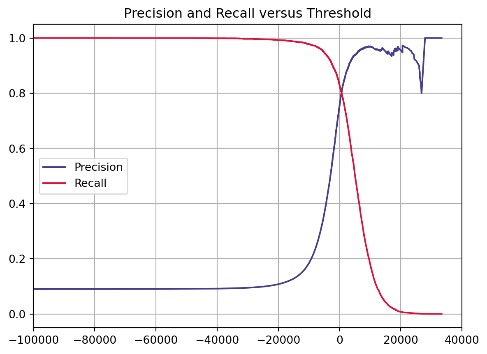
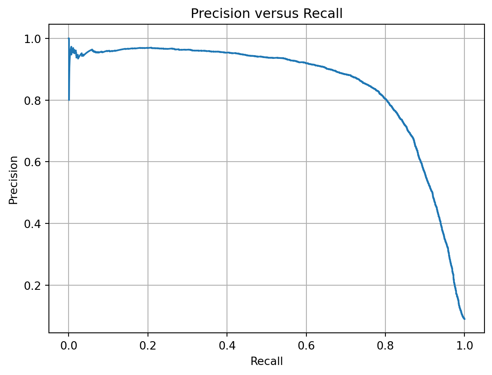

from sklearn.datasets import fetch_openmlmnist = fetch_openml('mnist_784', as_frame=False) # as_frame=False: get data as Numpy Array instead of Pandas DataFramemnist.DESCR
/usr/local/anaconda3/envs/dhuy/lib/python3.11/site-packages/sklearn/datasets/_openml.py:1022: FutureWarning:
The default value of `parser` will change from `'liac-arff'` to `'auto'` in 1.4. You can set `parser='auto'` to silence this warning. Therefore, an `ImportError` will be raised from 1.4 if the dataset is dense and pandas is not installed. Note that the pandas parser may return different data types. See the Notes Section in fetch_openml's API doc for details.
"**Author**: Yann LeCun, Corinna Cortes, Christopher J.C. Burges \n**Source**: [MNIST Website](http://yann.lecun.com/exdb/mnist/) - Date unknown \n**Please cite**: \n\nThe MNIST database of handwritten digits with 784 features, raw data available at: http://yann.lecun.com/exdb/mnist/. It can be split in a training set of the first 60,000 examples, and a test set of 10,000 examples \n\nIt is a subset of a larger set available from NIST. The digits have been size-normalized and centered in a fixed-size image. It is a good database for people who want to try learning techniques and pattern recognition methods on real-world data while spending minimal efforts on preprocessing and formatting. The original black and white (bilevel) images from NIST were size normalized to fit in a 20x20 pixel box while preserving their aspect ratio. The resulting images contain grey levels as a result of the anti-aliasing technique used by the normalization algorithm. the images were centered in a 28x28 image by computing the center of mass of the pixels, and translating the image so as to position this point at the center of the 28x28 field. \n\nWith some classification methods (particularly template-based methods, such as SVM and K-nearest neighbors), the error rate improves when the digits are centered by bounding box rather than center of mass. If you do this kind of pre-processing, you should report it in your publications. The MNIST database was constructed from NIST's NIST originally designated SD-3 as their training set and SD-1 as their test set. However, SD-3 is much cleaner and easier to recognize than SD-1. The reason for this can be found on the fact that SD-3 was collected among Census Bureau employees, while SD-1 was collected among high-school students. Drawing sensible conclusions from learning experiments requires that the result be independent of the choice of training set and test among the complete set of samples. Therefore it was necessary to build a new database by mixing NIST's datasets. \n\nThe MNIST training set is composed of 30,000 patterns from SD-3 and 30,000 patterns from SD-1. Our test set was composed of 5,000 patterns from SD-3 and 5,000 patterns from SD-1. The 60,000 pattern training set contained examples from approximately 250 writers. We made sure that the sets of writers of the training set and test set were disjoint. SD-1 contains 58,527 digit images written by 500 different writers. In contrast to SD-3, where blocks of data from each writer appeared in sequence, the data in SD-1 is scrambled. Writer identities for SD-1 is available and we used this information to unscramble the writers. We then split SD-1 in two: characters written by the first 250 writers went into our new training set. The remaining 250 writers were placed in our test set. Thus we had two sets with nearly 30,000 examples each. The new training set was completed with enough examples from SD-3, starting at pattern # 0, to make a full set of 60,000 training patterns. Similarly, the new test set was completed with SD-3 examples starting at pattern # 35,000 to make a full set with 60,000 test patterns. Only a subset of 10,000 test images (5,000 from SD-1 and 5,000 from SD-3) is available on this site. The full 60,000 sample training set is available.\n\nDownloaded from openml.org."
7.2.2 Quick Look
## Size of datasetX,y = mnist.data, mnist.targetprint(X.shape, y.shape)
(70000, 784) (70000,)
## Quick lookimport matplotlib.pyplot as pltdef plot_digit(data): image = data.reshape(28,28) plt.imshow(image, cmap='binary') # binary: grayscale color map from 0 (white) to 255 (black)some_digit = X[0] # Look at first digitplot_digit(some_digit)plt.show()

7.2.3 Create train, test set
## Split dataset into train set and test set as its describe (train: first 60000 images, test: last 10000 images)X_train, X_test, y_train, y_test = X[:60000], X[60000:], y[:60000], y[60000:]print(X_train.shape)
from sklearn.linear_model import SGDClassifiersgd_clf = SGDClassifier(random_state=42)sgd_clf.fit(X_train, y_train_5)sgd_clf.predict([some_digit])
array([ True])
7.3.1.2 Evaluate model
Metrics:
- Accuracy
- Confusion matrix: Precision, Recall (TPR), FPR, ROC, ROC AUC
- Plot: Precision-Recall Curve, ROC Curve
Use case:
- Precision-Recall Curve: aim to care more about false positives than the false negatives
- Otherwise: ROC Curve
Accuracy
from sklearn.model_selection import cross_val_scorecross_val_score(sgd_clf, X_train, y_train_5, cv=3, scoring='accuracy')
array([0.95035, 0.96035, 0.9604 ])
The accuracy scores are pretty good, but it may be due to the class imbalance. Let take a look at a Dummy Model which always classify as the most frequent class
The accuracy scores are over 90% because there’s only about 10% of training set are 5 digit
=> With class imbalance, accuracy score is not a useful metric
=> We will use other metrics such as Precision, Recall, ROC Curve, AUC
Compute the scores of all instances in the training using decision_function
Change the threshold to see the difference
y_score = sgd_clf.decision_function([some_digit])threshold = [0, 1000, 3000]for thr in threshold:print(f'With threshold of {thr:4d}: predicted value is {y_score>thr}')
With threshold of 0: predicted value is [ True]
With threshold of 1000: predicted value is [ True]
With threshold of 3000: predicted value is [False]
How to choose the suitable threshold?
Use Precision-Recall Curve
precision_recall_curve: require scores computed from decision_function or probabilities from predict_proba
## Precision-Recall Curve### Compute scores by decision_functiony_scores = cross_val_predict(sgd_clf, X_train, y_train_5, method='decision_function')### Plot Precision-Recall Curve vs Thresholdfrom sklearn.metrics import precision_recall_curveprecisions, recalls, thresholds = precision_recall_curve(y_train_5, y_scores)plt.plot(thresholds, precisions[:-1], label='Precision', color='darkslateblue')plt.plot(thresholds, recalls[:-1], label='Recall', color='crimson')plt.grid()plt.legend(loc='center left')plt.xlim([-100000,40000])plt.title('Precision and Recall versus Threshold')plt.show()

The higher Precision, the lower Recall and vice versa
## Plot Precision versus Recallplt.plot(recalls, precisions)plt.title('Precision versus Recall')plt.xlabel('Recall')plt.ylabel('Precision')plt.grid()plt.show()

Depend on your project, you would trade between precision and recall
## Find Threshold of over 0.90 Precisionidx_90_precision = (precisions >=0.90).argmax()threshold_90_precision = thresholds[idx_90_precision]threshold_90_precision
/usr/local/anaconda3/envs/dhuy/lib/python3.11/site-packages/sklearn/linear_model/_logistic.py:460: ConvergenceWarning:
lbfgs failed to converge (status=1):
STOP: TOTAL NO. of ITERATIONS REACHED LIMIT.
Increase the number of iterations (max_iter) or scale the data as shown in:
https://scikit-learn.org/stable/modules/preprocessing.html
Please also refer to the documentation for alternative solver options:
https://scikit-learn.org/stable/modules/linear_model.html#logistic-regression
/usr/local/anaconda3/envs/dhuy/lib/python3.11/site-packages/sklearn/linear_model/_logistic.py:460: ConvergenceWarning:
lbfgs failed to converge (status=1):
STOP: TOTAL NO. of ITERATIONS REACHED LIMIT.
Increase the number of iterations (max_iter) or scale the data as shown in:
https://scikit-learn.org/stable/modules/preprocessing.html
Please also refer to the documentation for alternative solver options:
https://scikit-learn.org/stable/modules/linear_model.html#logistic-regression
/usr/local/anaconda3/envs/dhuy/lib/python3.11/site-packages/sklearn/linear_model/_logistic.py:460: ConvergenceWarning:
lbfgs failed to converge (status=1):
STOP: TOTAL NO. of ITERATIONS REACHED LIMIT.
Increase the number of iterations (max_iter) or scale the data as shown in:
https://scikit-learn.org/stable/modules/preprocessing.html
Please also refer to the documentation for alternative solver options:
https://scikit-learn.org/stable/modules/linear_model.html#logistic-regression
## Measure performancethreshold =0.5f1_logis = f1_score(y_train_5, y_pred_logis>=threshold)auc_logis = roc_auc_score(y_train_5, y_pred_logis>=threshold)print(f'F1 score Random Forest: {f1_logis:.4f}')print(f'AUC Random Forest: {auc_logis:.4f}')
F1 score Random Forest: 0.8487
AUC Random Forest: 0.9004
In row #5 and column #8 on the left plot, it’s means 10% of true 5s is misclassified as 8s. Kinda hard to see the errors made by model. Therefore, we will put 0 weight on correct prediction (error plot).
Confustion matrix with error normalized by row (left) and by column (right) (normalize=[‘true’,‘pred’])